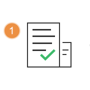
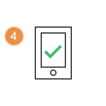

如何加入顶么？
- 

- 
- 提交申请
- 洽谈业务
- 签订合同
- 实施上线
1.提交申请后多久得到回复？
您填写入驻申请表提交成功之后，我们会在2个工作日之内跟您取得联系
2.使用订么智慧餐厅系统及服务需要收费吗？
是需要收费的。订么根据商户选择的不同产品方案，提供不同的套餐价格。 另外，收费商户还享受微信公众号代申请及微信支付功能开通的服务
3.商家微信公众号使用订么服务，需要怎么做？
需要进行公众号托管到订么，托管后，可使用订么后台进行公众号功能配置
4.商家已有餐饮管理系统还能使用订么吗？
可以。订么线上服务提供与店内系统对接的方案，也可使用人工转接不进行对接的方案
5.开通订么智慧餐厅，是否提供培训服务？
订么智慧餐厅在实施完成后，会进行使用培训。 同时，在后续使用过程中发现疑问可以联系与您对接的运营人员或直接拨打订么客服热线进行咨询